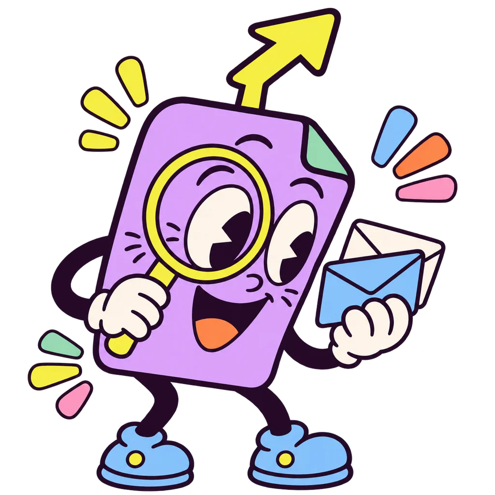

Reads the context and finds what needs doing. Strict JSON schema.
Do the work behind every card, all at once.
Orders the feed and learns from every swipe, edit and dismissal.
Acts on approval: sends, posts, schedules. Tool calling.